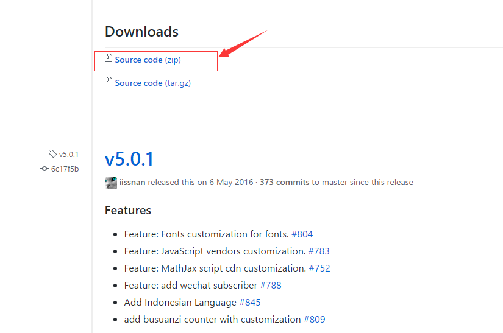
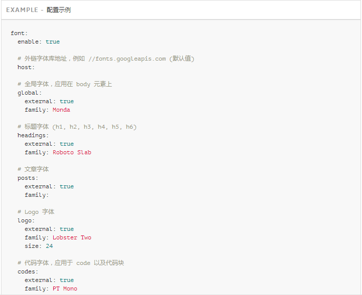
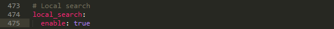

参考文档
前言说明
在
Hexo中有两份主要的配置文件，其名称都是_config.yml。 其中，一份位于站点根目录下，主要包含Hexo本身的配置；另一份位于主题目录下，这份配置由主题作者提供，主要用于配置主题相关的选项。为了描述方便，在以下说明中，将前者称为
站点配置文件， 后者称为主题配置文件。想体验其他Hexo主题请在Hexo官方theme社区中搜索
基本使用
安装NexT
Hexo 安装主题的方式非常简单，只需要将主题文件拷贝至站点目录的
themes目录下， 然后修改下配置文件即可;安装步骤如下:
主题下载安装
git克隆
如果你熟悉Git， 建议你使用
克隆最新版本的方式，之后的更新可以通过git pull来快速更新， 而不用再次下载压缩包替换。想深入了解git的使用请见：版本控制系统(VCS)之git;也可以通过《Pro Git》在线版本这本书来学习
基于ssh协议(建议使用该方法，不担心被墙)
在 Hexo 站点根目录下打开终端窗口。使用 Git checkout 代码：
$ cd your-hexo-site
$ git clone git@github.com:iissnan/hexo-theme-next.git themes/next
上述的ssh链接可以在主题的github主界面上copy到：
主题更新
$cd themes/next
$git pull
基于https协议(有时被墙无法连接)
在 Hexo 站点根目录下打开终端窗口。使用 Git checkout 代码：
$ cd your-hexo-site
$ git clone https://github.com/iissnan/hexo-theme-next themes/next
上述的https链接可以在主题的github主界面上copy到：
主题更新
$cd themes/next
$git pull
下载压缩包安装
1.前往NexT版本发布页面或者NexTgithub主界面
2.选择你所需要的版本。版本发布页面下载Download 区域下的Source Code (zip)(类Unix系统下载tar.gz格式)到本地；github主界面下载Clone and download区域下的Download Zip到本地

3.解压所下载的压缩包至站点的 themes目录下， 并将 解压后的文件夹名称hexo-theme-next-0.4.0更改为 next
启用主题
与所有
Hexo主题启用的模式一样。当克隆/下载完成后，打开站点配置文件，找到theme字段，并将其值更改为next。
到此，NexT 主题安装完成。下一步我们将验证主题是否正确启用。在切换主题之后、验证之前， 我们最好使用
hexo clean来清除 Hexo 的缓存。
验证主题
解析生成静态文件
$hexo generate
启动本地Hexo服务器
可以开启
调试模式（即加上--debug）,命令如下
$hexo s --debug
在服务启动的过程，注意观察命令行输出是否有任何异常信息，如果你碰到问题，这些信息将帮助他人更好的定位错误。 当命令行输出如下信息时表示服务成功启动，可以使用浏览器预览
INFO Hexo is running at http://localhost:4000/. Press Ctrl+C to stop.
本地浏览器预览
此时即可使用浏览器访问
http://localhost:4000，检查站点是否正确运行.当你看到站点的外观与下图所示类似时即说明你已成功安装NexT主题。这是NexT 默认的Scheme —— Muse
主题设定
选择 Scheme
Scheme是 NexT 提供的一种特性，借助于Scheme，NexT 为你提供多种不同的外观。同时，几乎所有的配置都可以在Scheme之间共用。目前 NexT 支持三种Scheme，他们是：
- Muse - 默认 Scheme，这是 NexT 最初的版本，黑白主调，大量留白
- Mist - Muse 的紧凑版本，整洁有序的单栏外观
- Pisces - 双栏 Scheme，小家碧玉似的清新
Scheme的切换通过更改主题配置文件，搜索scheme关键字。 你会看到有三行scheme的配置，将你需用启用的scheme前面注释 # 去除即可，如下：
不同的
Scheme值对应的页面中的menubar和sidebar显示效果不一样
设置 语言
编辑
站点配置文件， 将language设置成你所需要的语言。建议明确设置你所需要的语言，例如选用简体中文，配置如下：
language: zh-Hans
目前 NexT 支持的语言如以下表格所示：
设置菜单
菜单配置包括三个部分，第一是
菜单项（名称和链接），第二是菜单项的显示文本，第三是菜单项对应的图标。通过编辑主题配置文件修改上述三部分。菜单menu在面页中显示的位置根据
Scheme值不同而不同
设定菜单项
设定菜单项，对应的字段是
menu。menu下的菜单项的设置格式是：item name: link。其中item name是菜单项的名称，这个名称并不直接显示在页面上，她将用于匹配图标以及翻译然后显示在页面上；link是菜单项的设定值，可以理解为文件路径(链接)
设定菜单项的显示文本
在第一步中设置的菜单的名称并不直接用于界面上的展示。Hexo 在生成的时候将使用 这个名称查找对应语言的翻译文本，提取翻译内容并显示。这些翻译文本放置在
NexT主题目录下的languages/{language}.yml（{language} 是你在站点配置文件中language项配置的语言）。
以简体中文为例，若你需要添加一个菜单项，比如
others。那么就需要修改简体中文对应的翻译文件languages/zh-Hans.yml，在menu字段下添加这一项：
设定菜单项对应的图标
NexT使用的是Font Awesome 提供的图标，
Font Awesome提供了 600+ 的图标，可以满足绝大的多数的场景，同时无须担心在 Retina 屏幕下图标模糊的问题。设定菜单项的图标，对应的字段是主题配置文件中的
menu_icons项。设定格式是item name: icon name，其中item name与第一步设定的菜单项名字对应，icon name是Font Awesome图标的名字。而enable可用于控制是否显示图标，你可以设置成false来去掉图标。
注意
- 在菜单图标开启的情况下，如果菜单项与菜单未匹配（没有设置或者无效的
Font Awesome图标名字） 的情况下，NexT将会使用?作为图标。- 注意键值（如
home）的大小写要严格匹配
设置侧栏
默认情况下，侧栏仅在文章页面（拥有目录列表）时才显示，并放置于右侧位置。 可以通过修改
主题配置文件中的sidebar字段来控制侧栏的行为。侧栏的设置包括两个部分，其一是侧栏的位置; 其二是侧栏显示的时机。
侧栏位置
编辑
主题配置文件,通过修改sidebar字段中的sidebar.position的值来设置侧栏的位置，可选值有：
- left - 靠左放置
- right - 靠右放置
不同的
Scheme值对应的页面中的侧栏显示效果不一样
侧栏显示时机
编辑
主题配置文件,通过修改sidebar字段中的sidebar.display的值来设置侧栏显示的时机，可选值有：
- post - 默认行为，在文章页面（拥有目录列表）时显示
- always - 在所有页面中都显示
- hide - 在所有页面中都隐藏（可以手动展开）
- remove - 完全移除
设置头像
编辑
主题配置文件,通过修改avatar字段的值(头像的链接地址)来设置图像，其中可选的值有：
自测发现该设置不生效，可直接将主题目录下的
sources/images/目录中的avatar.gif替换成自己想设置的图像即可，注意目测是只识别gif格式
设置作者昵称
编辑
站点配置文件,设置author字段的值为你的昵称。
设置站点描述
编辑
站点配置文件,设置description字段的值为你的站点描述。站点描述可以是你喜欢的一句签名
个性化定制
主题配置
设置RSS
编辑
主题配置文件，通过设定rss字段的值来设置RSS.为满足特定的使用场景，NexT中RSS有三个可用选项：
- false：禁用 RSS，不在页面上显示RSS连接
- 留空：使用Hexo生成的
Feed链接.需要先安装 hexo-generator-feed插件。- 具体的链接地址：适用于已经烧制过 Feed 的情形
搜索插件
安装插件
在根目录下打开终端，输入命令
$ npm install hexo-generator-feed --save
配置
编辑
主题配置文件,设定RSS字段，添加feed字段
添加标签页面
新建「标签」页面，并在菜单中显示「标签」链接。「标签」页面将展示站点的所有标签，若你的所有文章都未包含标签，此页面将是空的。
新建页面
在根目录下打开终端，输入
hexo new page命令新建一个页面，命名为tags：
设置页面类型
编辑刚新建的页面，在
front-matter区域添加type字段，值设置为tags，主题将自动为这个页面显示标签云。页面内容如下：
修改菜单
在菜单中添加链接。编辑
主题配置文件，添加tags到menu字段中，如下:
注意
如果有启用
多说或者Disqus评论，页面也会带有评论。若需要关闭的话，在front-matter区域添加字段comments并将值设置为false，如：
添加分类页面
新建「分类」页面，并在菜单中显示「分类」链接。「分类」页面将展示站点的所有分类，若你的所有文章都未包含分类，此页面将是空的
新建页面
在根目录下打开终端，输入
hexo new page命令新建一个页面，命名为categories：
设置页面类型
编辑刚新建的页面，在
front-matter区域添加type字段，值设置为categories，主题将自动为这个页面显示分类。页面内容如下：
修改菜单
在菜单中添加链接。编辑
主题配置文件，添加categories到menu字段中，如下:
注意
1.如果有启用
多说或者Disqus评论，页面也会带有评论。若需要关闭的话，在front-matter区域添加字段comments并将值设置为false，如：
2.分类页面的排版遵循规则：不同级别的名称按照博文
front-matter区域中categories字段指定的从上到下的顺序依次层次化显示；同级别的名称安装其名称首字母在ASCII表中的位置从上到下依次显示。如下：
设置字体
注意：此特性在版本
5.0.1中引入，要使用此功能请确保所使用的 NexT 版本在此之后为了解决Google Fonts API不稳定的问题，NexT 在 5.0.1 中引入此特性。 通过此特性，你可以指定所使用的字体库外链地址；与此同时，NexT 开放了 5 个特定范围的字体设定，他们是：
- 全局字体：定义的字体将在全站范围使用
- 标题字体：文章内标题的字体（h1, h2, h3, h4, h5, h6）
- 文章字体：文章所使用的字体
- Logo字体：Logo 所使用的字体
- 代码字体： 代码块所使用的字体
各项所指定的字体将作为首选字体，当他们不可用时会自动
Fallback到NexT设定的基础字体组：
- 非代码类字体：
Fallback到"PingFang SC","Microsoft YaHei",sans-serif- 代码类字体：
Fallback到consolas, Menlo,"PingFang SC","Microsoft YaHei",monospace另外，每一项都有一个额外的
external属性，此属性用来控制是否使用外链字体库。 开放此属性方便你设定那些已经安装在系统中的字体，减少不必要的请求（请求大小）

设置代码高亮主题
NexT使用 Tomorrow Theme 作为代码高亮，共有5款主题供你选择。NexT默认使用的是白色的
normal主题，可选的值有normal，night，night blue，night bright，night eighties：
编辑
主题配置文件，更改highlight_theme字段的值，如：

侧边栏社交链接
侧栏社交链接的修改包含两个部分，第一是
链接，第二是链接图标。两者配置均在主题配置文件中
配置链接
编辑
主题配置文件，修改social字段的值，其键值格式是：显示文本:链接地址
配置链接图标
编辑
主题配置文件，修改social_icons字段的值，格式是匹配键: Font Awesome 图标名称，匹配键与上一步所配置的链接的显示文本相同（大小写严格匹配），图标名称是Font Awesome图标的名字（不必带 fa- 前缀）。enable选项用于控制是否显示图标，你可以设置成false来去掉图标。
开启打赏功能
可参考habren进行设置
编辑主题配置文件,添加如下内容：

图片放在
theme/next/souce/images/下
设置友情链接
可参考iamwent 进行配置
编辑主题配置文件,添加如下内容：
多说评论显示UA
可参考Doublemine进行配置
编辑
主题配置文件，修改duoshuo_info字段；设置ua_enable为true即可显示UA信息。admin_enable是用于显示「博主」文字，表明评论者是博主,此字段需要同时配置user_id和admin_nickname字段。请访问多说，登录并访问「我的主页」获取user_id，此ID是网址最后那串数字。设置如下:
腾讯公益404页面
站点建立时间
订阅微信公众号
设置动画效果
第三方服务
评论系统
多说
Disqus
Facebook Comments
HyperComments
网易云跟帖
来必力
数据统计与分析
百度统计
Google分析
腾讯分析
CNZZ统计
不蒜子统计
腾讯移动分析
内容分享服务
JiaThis
百度分享
多说分享
AddThis
搜索服务
Swiftype
微搜索
Local Search
添加
百度/谷歌/本地自定义站点内容搜索
安装插件
在根目录下打开终端，执行下列命令
npm install hexo-generator-searchdb --save

编辑配置文件
1、编辑站点配置文件，添加如下内容：
2、编辑主题配置文件，启动本地搜索功能

Algolia
其他服务
MathJax
Facebook SDK
Google Webmaster tools
多说热评文章
内建标签
文本居中的引用
使用方式
效果示例
突破容器宽度限制的图片
使用方式
效果示例
Bootstrap Callout
使用方式
效果示例
进阶设定
设置JavaScipt第三方库
其他
常见问题
如何设置「阅读全文」
Favicon 设置后没有生效
如何更改字体
为何新增的菜单项显示 Menu.xxx
标签/分类数量统计不准确
如何关闭新建页面的评论功能
如何设置页面文章的篇数
如何优化 NexT 主题
Cannot find module XXX
其他平台
这里包含
NexT在其他平台的实现版本Farbox